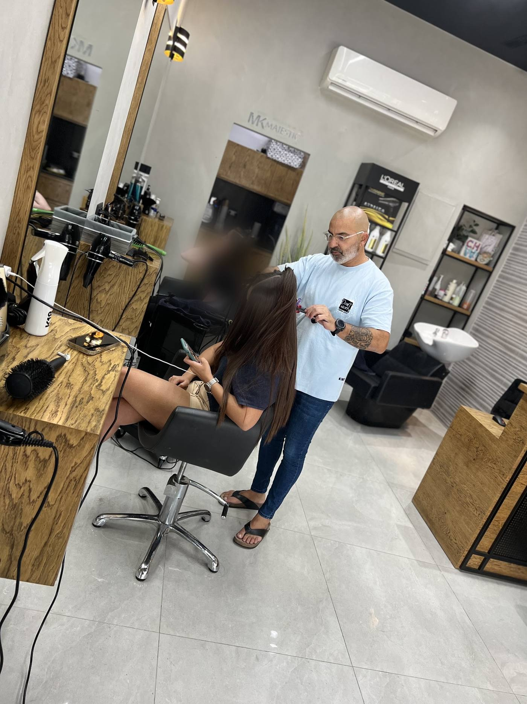
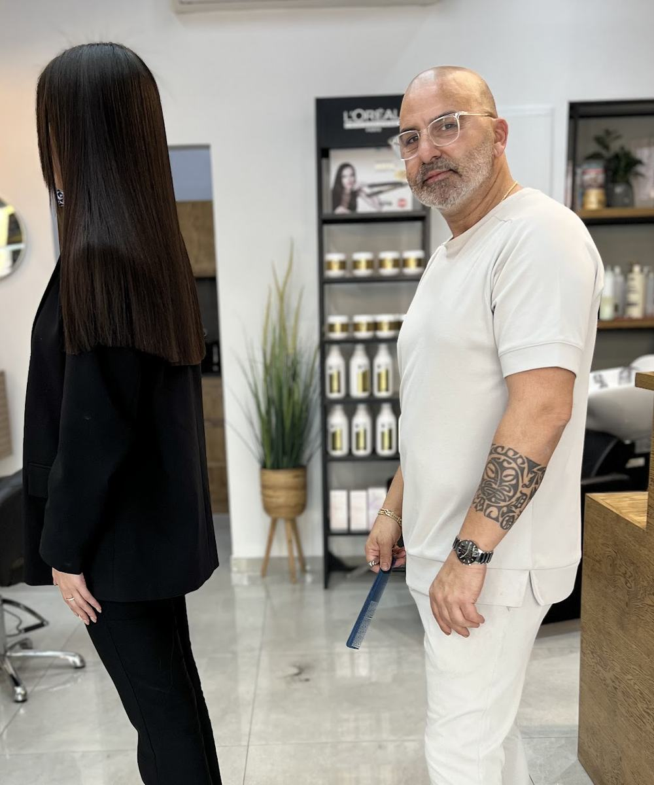
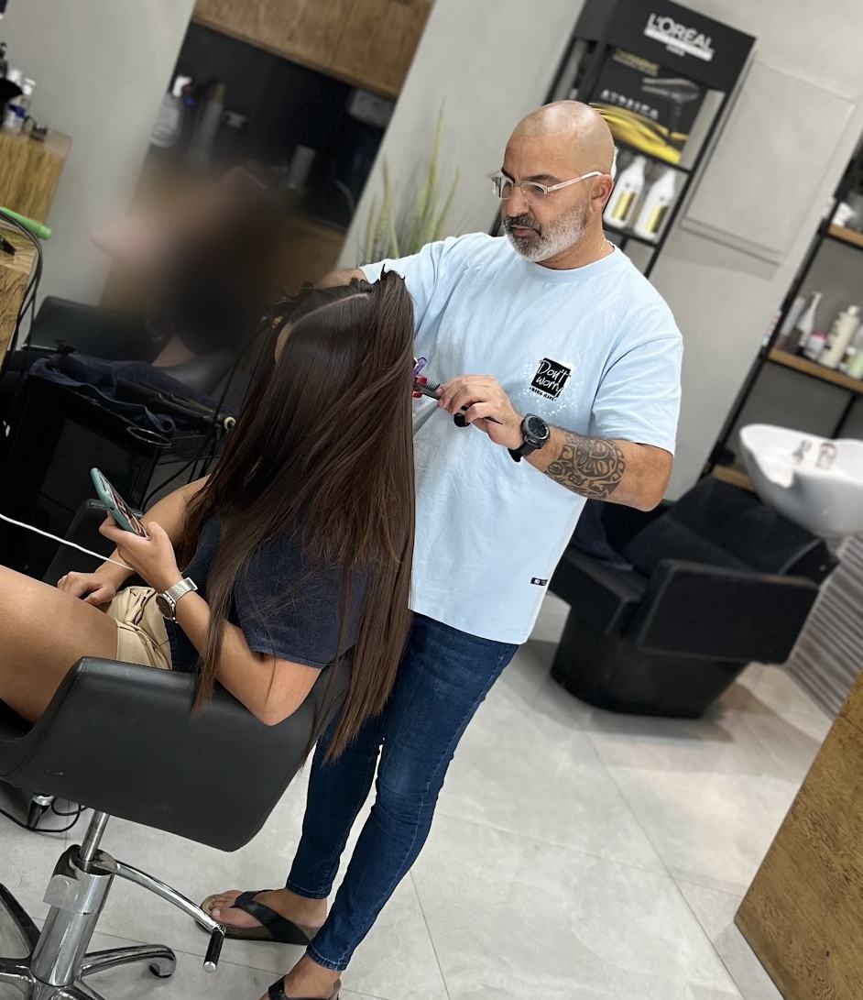
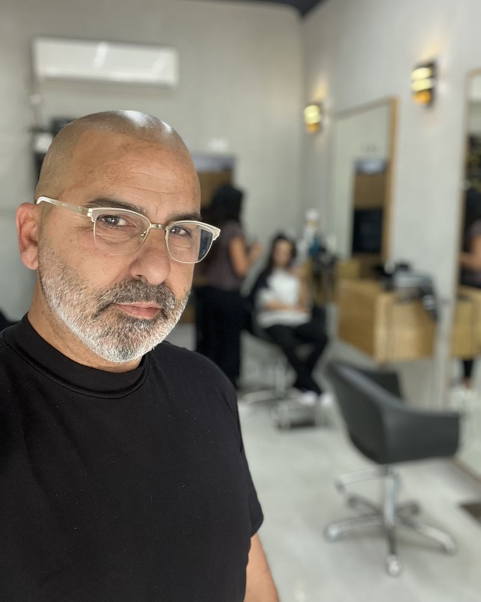
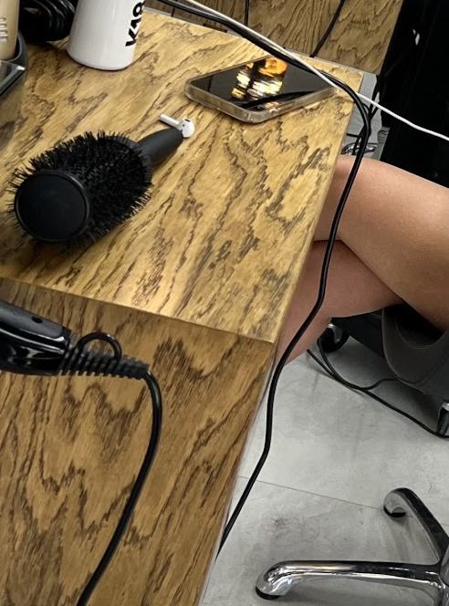
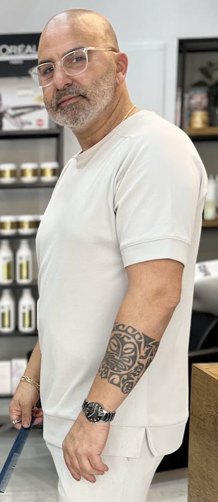
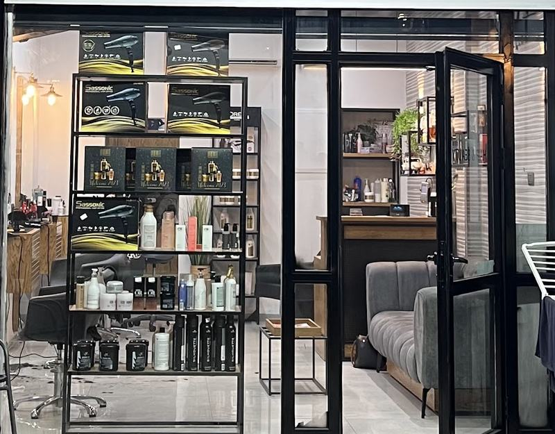
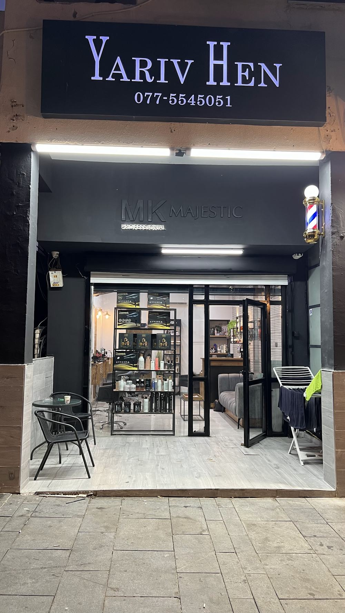

החלקהStraighteningישר ומבריק עד הקצוות · צילום מהסלוןStraight and glossy to the ends · photographed in the salon

פן ועיצובBlow-dry & stylingקווצה אחרי קווצה · יריב בעבודהOne section at a time · Yariv at work
יריב חןYariv Hen בוטיק שיערHair boutique קריית אתאKiryat Ata
- העצמאות 51, קריית אתא51 HaAtzmaut St, Kiryat Ata
- 4.9 בגוגל · 138 ביקורות4.9 on Google · 138 reviews
החלקה, צבע, תספורת ופן, בסלון של יריב חן ברחוב העצמאות.Straightening, colour, cuts and blow-dry, in Yariv Hen’s salon on HaAtzmaut Street.
מעצב שיער יריב חן · Yariv Hen Hair Boutique
וואטסאפ ליריבWhatsApp Yariv
התקשרו ליריבCall Yariv
יריב חןYariv Hen




הסלון, עכשיוThe salon, right now
138 ביקורות בגוגל138 Google reviews
השלט שמואר מעל הכניסה, העצמאות 51The sign lit over the door, 51 HaAtzmaut St
- החלקהStraightening
- צבעColour
- תספורתCuts
- פן ועיצובBlow-dry & styling
מה כותבות עליוIn their words
4.9מתוך 5 · 138 ביקורות בגוגלout of 5 · 138 Google reviews
״אין על יריב בעולם! ידי זהב, חוזרת רק אליו כבר שנים. מומלץ בחוםםםם״
“No one like Yariv! Golden hands, I’ve gone back only to him for years. Warmly recommended.” (translated from Hebrew)
״מספר אחת! חוזרות רק אליו, אחרי נסיונות אצל אחרים, אין מה להשוות. מומלץ בחום״
“Number one! We only go back to him, after trying others, there’s no comparison. Warmly recommended.” (translated from Hebrew)
״אין על הספר הכי טוב בעולם, יחס ברמה הכי גבוה שיש, שירות טוב ספר אדיב אין כמו בעולםםם תגיעו״
“The best hairdresser in the world, care at the highest level, good service, a kind hairdresser, no one like him. Come!” (translated from Hebrew)
